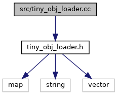

Multi-Segmentor
매크로
tiny_obj_loader.cc 파일 참조
#include "
tiny_obj_loader.h
"
tiny_obj_loader.cc에 대한 include 의존 그래프

이 파일의 소스 코드 페이지로 가기
매크로
#define
TINYOBJLOADER_IMPLEMENTATION
매크로 문서화
◆
TINYOBJLOADER_IMPLEMENTATION
#define TINYOBJLOADER_IMPLEMENTATION
tiny_obj_loader.cc
파일의
1
번째 라인에서 정의되었습니다.
src
tiny_obj_loader.cc
다음에 의해 생성됨 :
1.9.1
 1.9.1
1.9.1